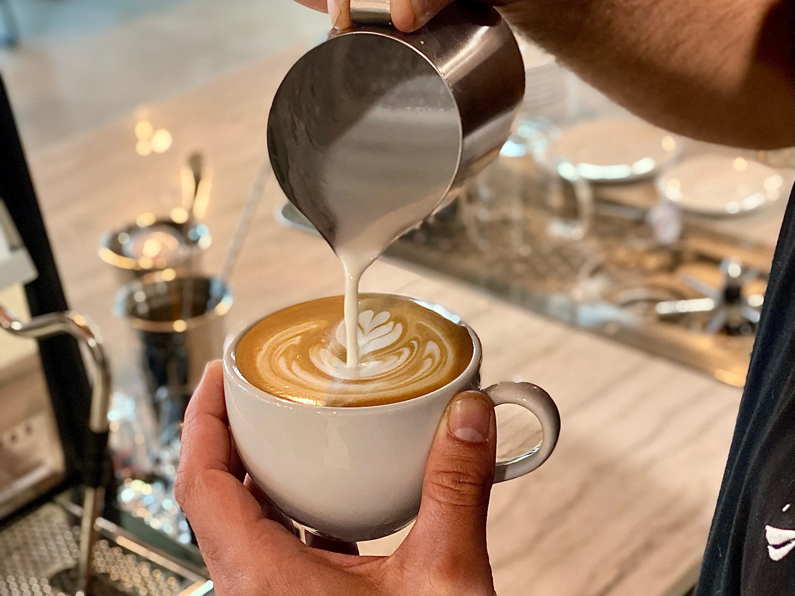
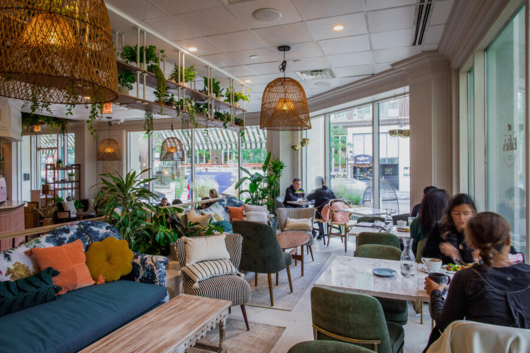
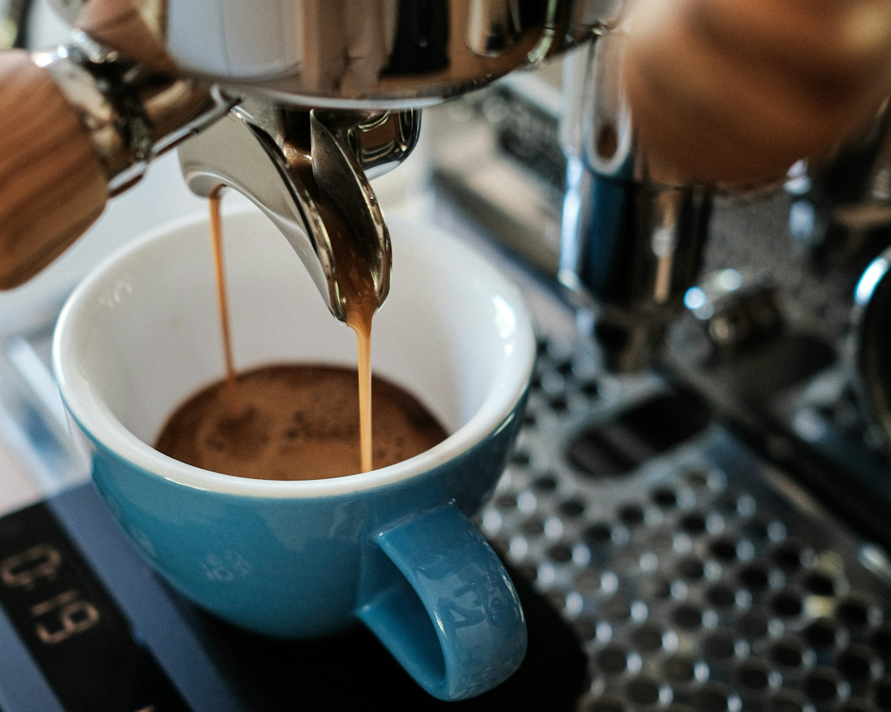

At Coffee Traveler’s Guide, we explore the top coffee destinations around the world. Our website is the ultimate coffee lover’s travel guide, making it easier to explore new coffee destinations. It features a list of the top-ranked coffee shops around the world and examines the unique experiences that each shop has to offer. It also provides curated lists of the best coffee shops in major cities worldwide. Ultimately, we provide a comprehensive guide to the top coffee destinations around the world.
Coffee is more than just a beverage; it is an experience that connects people around the world. It provides a break from reality that allows people to connect and socialize with others. Coffee is a source of inspiration for many travellers; exploring local cafés and finding hidden gems can lead to exciting new experiences and discoveries. Each country has its unique methods of preparing and consuming coffee. Visiting local coffee shops will enrich your travelling experiences, allowing you to connect with the culture on a much deeper level. Coffee is a global symbol that unifies communities and fosters a sense of belonging.
Discover the top coffee shops in the world which have excelled in innovation, ambiance, atmosphere, barista expertise, customer service, sustainability, and above all, coffee quality. Explore the top 3 coffee shops: Toby’s Estate Coffee Roasters, Onyx Coffee Lab, and GOTA Coffee Experts, which are setting the standard for exceptional coffee quality experience worldwide.
Explore the Best Cafés Around the WorldDiscover the best coffee shops in major cities across the globe, featuring the top cafes in New York City, Paris, Melbourne, and Seattle. Explore the coffee culture within each major city, examining its traditions and influence on global coffee trends.
Explore the Best Cafés in Major Cities Broken Link